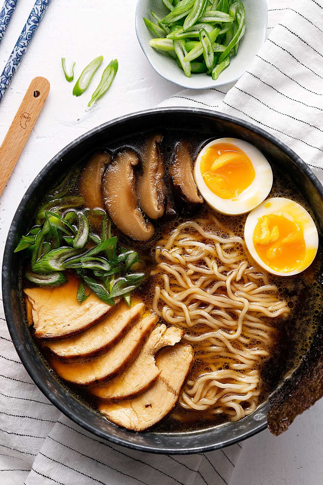

Ramen

Description
This chicken ramen recipe is a simple and quick way to enjoy restaurant style ramen at home!
Ramen is a type of Japanese noodle soup usually made with an umami broth of stewed bones and chewy
alkaline noodles. This recipe is designed to make it much simpler for people with busy lives!
Here's What You Need
Broth:
- 4 cups chicken stock
- 6 dried shiitake mushrooms
- 4 garlic cloves
- 2 inches of ginger
- 1 teaspoon sugar
- 1 tablespoon butter
- 1 cup low sodium soy sauce
Chicken
- 1 teaspoon low sodium soy sauce
- 1 teaspoon oil
- 1 teaspoon sugar
- 1/2 teaspoon salt
- 1 boneless and skinless chicken breast
Other:
- 2 eggs
- 5.3 oz dry egg noodles
- 1 green onion
Steps
- Preheat your oven to 400F
- Boil water in 2 pots
- Heat a skillet on medium high heat with a bit of oil
- Prepare a bowl of water with ice cubes
- Add everything from the broth section in a pot, cover, and let simmer for 20 minutes
- Add everything from the chicken section together in a bowl and mix well
- Char the chicken on the preheated skillet on both sides and then finish in the oven until 165F internal
- Once the water is boiling in the pot, add the eggs for 6 1/2 minutes and then submerge them in ice water
- Add the noodles to the other boiling pot, and cook according to the packet's instructions. Drain and set aside
Assembly
- Discard the garlic and ginger from the broth
- Slice the shiitake, green onion, and chicken into thin slices
- Ladle your broth into the bowl, followed by the chicken and mushrooms
- Slice the eggs and place in the bowl
- Finish off with some green onions and consume immediately!